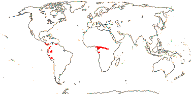
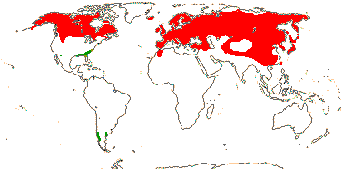
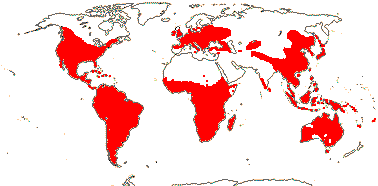

EMBRYOPSIDA Pirani & Prado
Gametophyte dominant, independent, multicellular, not motile, initially ±globular; showing gravitropism; acquisition of phenylalanine lysase [PAL], microbial terpene synthase-like genes +, triterpenoids produced by CYP716 enzymes, phenylpropanoid metabolism [lignans +, flavonoids + (absorbtion of UV radiation)], xyloglucans in primary cell wall, side chains charged; plant poikilohydrous [protoplasm dessication tolerant], ectohydrous [free water outside plant physiologically important]; thalloid, leafy, with single-celled apical meristem, tissues little differentiated, rhizoids +, unicellular; chloroplasts several per cell, pyrenoids 0; glycolate metabolism in leaf peroxisomes [glyoxysomes]; centrioles/centrosomes in vegetative cells 0, microtubules with γ-tubulin along their lengths [?here], interphase microtubules form hoop-like system; metaphase spindle anastral, predictive preprophase band + [with microtubules and F-actin; where new cell wall will form], phragmoplast + [cell wall deposition centrifugal, from around the anaphase spindle], plasmodesmata +; antheridia and archegonia jacketed, surficial; blepharoplast +, centrioles develop de novo, bicentriole pair coaxial, separate at midpoint, centrioles rotate, associated with basal bodies of cilia, multilayered structure + [4 layers: L1, L4, tubules; L2, L3, short vertical lamellae] (0), spline + [tubules from L1 encircling spermatid], basal body 200-250 nm long, associated with amorphous electron-dense material, microtubules in basal end lacking symmetry, stellate array of filaments in transition zone extended, axonemal cap 0 [microtubules disorganized at apex of cilium]; male gametes [spermatozoids] with a left-handed coil, cilia 2, lateral; oogamy; sporophyte multicellular, cuticle +, plane of first cell division transverse [with respect to long axis of archegonium/embryo sac], sporangium and upper part of seta developing from epibasal cell [towards the archegonial neck, exoscopic], with at least transient apical cell [?level], initially surrounded by and dependent on gametophyte, placental transfer cells +, in both sporophyte and gametophyte, wall ingrowths develop early; suspensor/foot +, cells at foot tip somewhat haustorial; sporangium +, single, terminal, dehiscence longitudinal; meiosis sporic, monoplastidic, MTOC [MTOC = microtubule organizing centre] associated with plastid, sporocytes 4-lobed, cytokinesis simultaneous, preceding nuclear division, quadripolar microtubule system +; wall development both centripetal and centrifugal, 1000 spores/sporangium, sporopollenin in the spore wall laid down in association with trilamellar layers [white-line centred lamellae; tripartite lamellae]; nuclear genome size [1C] <1.4 pg, main telomere sequence motif TTTAGGG, LEAFY and KNOX1 and KNOX2 genes present, ethylene involved in cell elongation; chloroplast genome with close association between trnLUAA and trnFGAA genes [precursors for starch synthesis], tufA gene moved to nucleus; mitochondrial trnS(gcu) and trnN(guu) genes +.
Many of the bolded characters in the characterization above are apomorphies of subsets of streptophytes along the lineage leading to the embryophytes, not apomorphies of crown-group embryophytes per se.
All groups below are crown groups, nearly all are extant. Characters mentioned are those of the immediate common ancestor of the group, [] contains explanatory material, () features common in clade, exact status unclear.
STOMATOPHYTES
Abscisic acid, L- and D-methionine distinguished metabolically; pro- and metaphase spindles acentric; sporophyte with polar transport of auxins, class 1 KNOX genes expressed in sporangium alone; sporangium wall 4≤ cells across [≡ eusporangium], tapetum +, secreting sporopollenin, which obscures outer white-line centred lamellae, columella +, developing from endothecial cells; stomata +, on sporangium, anomocytic, cell lineage that produces them with symmetric divisions [perigenous]; underlying similarities in the development of conducting tissue and of rhizoids/root hairs; spores trilete; shoot meristem patterning gene families expressed; MIKC, MI*K*C* genes, post-transcriptional editing of chloroplast genes; gain of three group II mitochondrial introns, mitochondrial trnS(gcu) and trnN(guu) genes 0.
[Anthocerophyta + Polysporangiophyta]: gametophyte leafless; archegonia embedded/sunken [only neck protruding]; sporophyte long-lived, chlorophyllous; cell walls with xylans.
POLYSPORANGIOPHYTA†
Sporophyte well developed, branched, branching apical, dichotomous, potentially indeterminate; hydroids +; stomata on stem; sporangia several, terminal; spore walls not multilamellate [?here].
TRACHEOPHYTA†
Vascular tissue + [tracheids, walls with bars of secondary thickening].
EXTANT TRACHEOPHYTA / VASCULAR PLANTS
Sporophyte with photosynthetic red light response, stomata open in response to blue light; plant homoiohydrous [water content of protoplasm relatively stable]; control of leaf hydration passive; plant endohydrous [physiologically important free water inside plant]; (condensed or nonhydrolyzable tannins/proanthocyanidins +); xyloglucans with side chains uncharged [?level], in secondary walls of vascular and mechanical tissue; lignins +; stem apex multicellular, with cytohistochemical zonation, plasmodesmata formation based on cell lineage; tracheids +, in both protoxylem and metaxylem, G- and S-types; sieve cells + [nucleus degenerating]; endodermis +; leaves/sporophylls spirally arranged, blades with mean venation density ca 1.8 mm/mm2 [to 5 mm/mm2], all epidermal cells with chloroplasts; sporangia adaxial, columella 0; tapetum glandular; ?position of transfer cells; MTOCs not associated with plastids, basal body 350-550 nm long, stellate array in transition region initially joining microtubule triplets; suspensor +, shoot apex developing away from micropyle/archegonial neck [from hypobasal cell, endoscopic], root lateral with respect to the longitudinal axis of the embryo [plant homorhizic].
[MONILOPHYTA + LIGNOPHYTA]Sporophyte endomycorrhizal [with Glomeromycota]; growth ± monopodial, branching spiral; roots +, endogenous, positively geotropic, root hairs and root cap +, protoxylem exarch, lateral roots +, endogenous; G-type tracheids +, with scalariform-bordered pits; leaves with apical/marginal growth, venation development basipetal, growth determinate; sporangium dehiscence by a single longitudinal slit; cells polyplastidic, MTOCs diffuse, perinuclear, migratory; blepharoplasts +, paired, with electron-dense material, centrioles on periphery, male gametes multiciliate; chloroplast long single copy ca 30kb inversion [from psbM to ycf2]; mitochondrion with loss of 4 genes, absence of numerous group II introns; LITTLE ZIPPER proteins.
LIGNOPHYTA†
Sporophyte woody; stem branching lateral, meristems axillary; lateral root origin from the pericycle; cork cambium + [producing cork abaxially], vascular cambium bifacial [producing phloem abaxially and xylem adaxially].
SEED PLANTS†
Plants heterosporous; megasporangium surrounded by cupule [i.e. = unitegmic ovule, cupule = integument]; pollen lands on ovule; megaspore germination endosporic [female gametophyte initially retained on the plant].
EXTANT SEED PLANTS / SPERMATOPHYTA
Plant evergreen; nicotinic acid metabolised to trigonelline, (cyanogenesis via tyrosine pathway); microbial terpene synthase-like genes 0; primary cell walls rich in xyloglucans and/or glucomannans, 25-30% pectin [Type I walls]; lignin chains started by monolignol dimerization [resinols common], particularly with guaiacyl and p-hydroxyphenyl [G + H] units [sinapyl units uncommon, no Maüle reaction]; root stele diarch to pentarch, xylem and phloem originating on alternating radii, cork cambium deep seated; stem apical meristem complex [with quiescent centre, etc.], plasmodesma density in SAM 1.6-6.2[mean]/μm2 [interface-specific plasmodesmatal network]; eustele +, protoxylem endarch, endodermis 0; wood homoxylous, tracheids and rays alone, tracheid/tracheid pits circular, bordered; mature sieve tube/cell lacking functioning nucleus, sieve tube plastids with starch grains; phloem fibres +; cork cambium superficial; leaf nodes 1:1, a single trace leaving the vascular sympodium; leaf vascular bundles amphicribral; guard cells the only epidermal cells with chloroplasts, stomatal pore with active opening in response to leaf hydration, control by abscisic acid, metabolic regulation of water use efficiency, etc.; axillary buds +, exogenous; prophylls two, lateral; leaves with petiole and lamina, development basipetal, lamina simple; sporangia borne on sporophylls; spores not dormant; microsporophylls aggregated in indeterminate cones/strobili; grains monosulcate, aperture in ana- position [distal], primexine + [involved in exine pattern formation with deposition of sporopollenin from tapetum there], exine and intine homogeneous, exine alveolar/honeycomb; ovules with parietal tissue [= crassinucellate], megaspore tetrad linear, functional megaspore single, chalazal, sporopollenin 0; gametophyte ± wholly dependent on sporophyte, development initially endosporic [apical cell 0, rhizoids 0, etc.]; male gametophyte with tube developing from distal end of grain, male gametes two, developing after pollination, with cell walls; female gametophyte initially syncytial, walls then surrounding individual nuclei; embryo cellular ab initio, suspensor short-minute, embryonic axis straight [shoot and root at opposite ends; plant allorhizic], cotyledons 2; embryo ± dormant; chloroplast ycf2 gene in inverted repeat, trans splicing of five mitochondrial group II introns, rpl6 gene absent; whole nuclear genome duplication [ζ - zeta - duplication], two copies of LEAFY gene, PHY gene duplications [three - [BP [A/N + C/O]] - copies], 5.8S and 5S rDNA in separate clusters.
ANGIOSPERMAE / MAGNOLIOPHYTA
Lignans, O-methyl flavonols, dihydroflavonols, triterpenoid oleanane, apigenin and/or luteolin scattered, [cyanogenesis in ANA grade?], lignin also with syringyl units common [G + S lignin, positive Maüle reaction - syringyl:guaiacyl ratio more than 2-2.5:1], hemicelluloses as xyloglucans; root cap meristem closed (open); pith relatively inconspicuous, lateral roots initiated immediately to the side of [when diarch] or opposite xylem poles; origin of epidermis with no clear pattern [probably from inner layer of root cap], trichoblasts [differentiated root hair-forming cells] 0, hypodermis suberised and with Casparian strip [= exodermis]; shoot apex with tunica-corpus construction, tunica 2-layered; starch grains simple; primary cell wall mostly with pectic polysaccharides, poor in mannans; tracheid:tracheid [end wall] plates with scalariform pitting, wood parenchyma +; sieve tubes enucleate, sieve plate with pores (0.1-)0.5-10< µm across, cytoplasm with P-proteins, not occluding pores of plate, companion cell and sieve tube from same mother cell; ?phloem loading/sugar transport; nodes 1:?; dark reversal Pfr → Pr; protoplasm dessication tolerant [plant poikilohydric]; stomata brachyparacytic [ends of subsidiary cells level with ends of pore], outer stomatal ledges producing vestibule, reduction in stomatal conductance with increasing CO2 concentration; lamina formed from the primordial leaf apex, margins toothed, development of venation acropetal, overall growth ± diffuse, secondary veins pinnate, fine venation hierarchical-reticulate, (1.7-)4.1(-5.7) mm/mm2, vein endings free; flowers perfect, pedicellate, ± haplomorphic, protogynous; parts free, numbers variable, development centripetal; P +, ?insertion, members each with a single trace, outer members not sharply differentiated from the others, not enclosing the floral bud; A many, filament not sharply distinguished from anther, stout, broad, with a single trace, anther introrse, tetrasporangiate, sporangia in two groups of two [dithecal], each theca dehiscing longitudinally by a common slit, ± embedded in the filament, walls with at least outer secondary parietal cells dividing, endothecium +, cells elongated at right angles to long axis of anther; tapetal cells binucleate; microspore mother cells in a block, microsporogenesis successive, walls developing by centripetal furrowing; pollen subspherical, tectum continuous or microperforate, ektexine columellate, endexine lamellate only in the apertural regions, thin, compact, intine in apertural areas thick, pollenkitt +; nectary 0; carpels present, superior, free, several, ascidiate [postgenital occlusion by secretion], stylulus at most short [shorter than ovary], hollow, cavity not lined by distinct epidermal layer, stigma ± decurrent, carinal, dry; suprastylar extragynoecial compitum +; ovules few [?1]/carpel, marginal, anatropous, bitegmic, micropyle endostomal, outer integument 2-3 cells across, often largely subdermal in origin, inner integument 2-3 cells across, often dermal in origin, parietal tissue 1-3 cells across, nucellar cap?; megasporocyte single, hypodermal, functional megaspore lacking cuticle; female gametophyte lacking chlorophyll, not photosynthesising, four-celled [one module, nucleus of egg cell sister to one of the polar nuclei]; ovule not increasing in size between pollination and fertilization; pollen grains land on stigma, bicellular at dispersal, mature male gametophyte tricellular, germinating in less than 3 hours, pollen tube elongated, unbranched, growing between cells, growth rate (20-)80-20,000 µm/hour, apex of pectins, wall with callose, lumen with callose plugs, penetration of ovules via micropyle [porogamous], whole process takes ca 18 hours, distance to first ovule 1.1-2.1 mm; male gametes lacking cell walls, ciliae 0, siphonogamy; double fertilization +, ovules aborting unless fertilized; P deciduous in fruit; mature seed much larger than fertilized ovule, small [], dry [no sarcotesta], exotestal; endosperm +, cellular, development heteropolar [first division oblique, micropylar end initially with a single large cell, divisions uniseriate, chalazal cell smaller, divisions in several planes], copious, oily and/or proteinaceous, embryo short [<¼ length of seed]; plastid and mitochondrial transmission maternal; Arabidopsis-type telomeres [(TTTAGGG)n]; nuclear genome size [1C] <1.4 pg [mean 1C = 18.1 pg, 1 pg = 109 base pairs], whole nuclear genome duplication [ε/epsilon event]; ndhB gene 21 codons enlarged at the 5' end, single copy of LEAFY and RPB2 gene, knox genes extensively duplicated [A1-A4], AP1/FUL gene, palaeo AP3 and PI genes [paralogous B-class genes] +, with "DEAER" motif, SEP3/LOFSEP and three copies of the PHY gene, [PHYB [PHYA + PHYC]]; chloroplast chlB, -L, -N, trnP-GGG genes 0.
[NYMPHAEALES [AUSTROBAILEYALES [[CHLORANTHALES + MAGNOLIIDS] [MONOCOTS [CERATOPHYLLALES + EUDICOTS]]]]]: wood fibres +; axial parenchyma diffuse or diffuse-in-aggregates; pollen monosulcate [anasulcate], tectum reticulate-perforate [here?]; ?genome duplication; "DEAER" motif in AP3 and PI genes lost, gaps in these genes.
[AUSTROBAILEYALES [[CHLORANTHALES + MAGNOLIIDS] [MONOCOTS [CERATOPHYLLALES + EUDICOTS]]]]: phloem loading passive, via symplast, plasmodesmata numerous; vessel elements with scalariform perforation plates in primary xylem; essential oils in specialized cells [lamina and P ± pellucid-punctate]; tension wood + [reaction wood: with gelatinous fibres, G-fibres, on adaxial side of branch/stem junction]; tectum reticulate; anther wall with outer secondary parietal cell layer dividing; nucellar cap + [character lost where in eudicots?]; 12BP [4 amino acids] deletion in P1 gene.
[[CHLORANTHALES + MAGNOLIIDS] [MONOCOTS [CERATOPHYLLALES + EUDICOTS]]] / MESANGIOSPERMAE: benzylisoquinoline alkaloids +; sesquiterpene synthase subfamily a [TPS-a] [?level], polyacetate derived anthraquinones + [?level]; outer epidermal walls of root elongation zone with cellulose fibrils oriented transverse to root axis; P more or less whorled, 3-merous [?here]; pollen tube growth intra-gynoecial; extragynoecial compitum 0; carpels plicate [?here]; embryo sac bipolar, 8 nucleate, antipodal cells persisting; endosperm triploid.
[MONOCOTS [CERATOPHYLLALES + EUDICOTS]]: (extra-floral nectaries +); (veins in lamina often 7-17 mm/mm2 or more [mean for eudicots 8.0]); (stamens opposite [two whorls of] P); (pollen tube growth fast).
[CERATOPHYLLALES + EUDICOTS]: ethereal oils 0.
EUDICOTS: (Myricetin, delphinidin +), asarone 0 [unknown in some groups, + in some asterids]; root epidermis derived from root cap [?Buxaceae, etc.]; (vessel elements with simple perforation plates in primary xylem); nodes 3:3; stomata anomocytic; flowers (dimerous), cyclic; protandry common; K/outer P members with three traces, ("C" +, with a single trace); A ?, filaments fairly slender, anthers basifixed; microsporogenesis simultaneous, pollen tricolpate, apertures in pairs at six points of the young tetrad [Fischer's rule], cleavage centripetal, wall with endexine; G with complete postgenital fusion, stylulus/style solid [?here]; seed coat?
[PROTEALES [TROCHODENDRALES [BUXALES + CORE EUDICOTS]]]: (axial/receptacular nectary +).
[TROCHODENDRALES [BUXALES + CORE EUDICOTS]]: benzylisoquinoline alkaloids 0; euAP3 + TM6 genes [duplication of paleoAP3 gene: B class], mitochondrial rps2 gene lost.
[BUXALES + CORE EUDICOTS]: mitochondrial rps11 gene lost.
CORE EUDICOTS / GUNNERIDAE: (ellagic and gallic acids +); leaf margins serrate; compitum + [one position]; micropyle?; γ whole nuclear genome duplication [palaeohexaploidy, gamma triplication], PI-dB motif +, small deletion in the 18S ribosomal DNA common.
[ROSIDS ET AL. + ASTERIDS ET AL.] / PENTAPETALAE: root apical meristem closed; (cyanogenesis also via [iso]leucine, valine and phenylalanine pathways); flowers rather stereotyped: 5-merous, parts whorled; P = calyx + corolla, the calyx enclosing the flower in bud, sepals with three or more traces, petals with a single trace; stamens = 2x K/C, in two whorls, internal/adaxial to the corolla whorl, alternating, (numerous, but then usually fasciculate and/or centrifugal); pollen tricolporate; G [5], G [3] also common, when [G 2], carpels superposed, placentation axile, style +, stigma not decurrent; compitum +; endosperm nuclear; fruit dry, dehiscent, loculicidal [when a capsule]; RNase-based gametophytic incompatibility system present; floral nectaries with CRABSCLAW expression; (monosymmetric flowers with adaxial/dorsal CYC expression).
[DILLENIALES [SAXIFRAGALES [VITALES + ROSIDS s. str.]]]: stipules + [usually apparently inserted on the stem].
[SAXIFRAGALES [VITALES + ROSIDS]] / ROSANAE Takhtajan / SUPERROSIDAE: ??
[VITALES + ROSIDS] / ROSIDAE: anthers ± dorsifixed, transition to filament narrow, connective thin.
ROSIDS: (mucilage cells with thickened inner periclinal walls and distinct cytoplasm); if nectary +, usu. receptacular; embryo long; chloroplast infA gene defunct, mitochondrial coxII.i3 intron 0.
ROSID I / FABIDAE / [ZYGOPHYLLALES [the COM clade + the nitrogen-fixing clade]]: endosperm scanty.
[the COM clade + the nitrogen-fixing clade]: ?
Age. The age of this node is estimated to be 82-78.1 m.y. by Xue et al. (2012), ca 121 m.y. by Foster et al. (2016a: q.v. for details) and about 142 m.y. by Z. Wu et al. (2014). If there is a clade [Malvids [the COM clade + the nitrogen-fixing clade]], i.e., no Zygophyllales, its age has been estimated at (131-)124(-118) m.y.o. (Foster et al. 2016a).
[CELASTRALES [OXALIDALES + MALPIGHIALES]] / the COM clade: seed exotegmic, cells fibrous. Back to Main Tree
Age. The crown age of this group was estimated as (108-)104(-100) or (95-)91(-87) m.y. (two penalized likelihood dates); Bayesian relaxed clock estimates were slightly older, to 108 m.y. (Hengcheng Wang et al. 2009). Wikström et al. (2001) had suggested an age of some (97-)94, 89(-86) m.y., rather like the ca 88.3 m.y. in Naumann et al. (2013), N. Zhang et al. (2012) an age of (90-)81(-70) m.y., Magallón and Castillo (2009) an age of around 102 m.y., Bell et al. (2010: note topology) ages of (111-)104, 101(-97) m.y. and Tank et al. (2015: Table S2) an age of about 113.2 m.y.; somewhat the oldest estimate, at ca 125 m.y., is that of Z. Wu et al. (2014).
Evolution: Divergence & Distribution. Endress (2011a) suggested that a key innovation around here might be incompletely tenuinucellate ovules.
Endress and Matthews (2006a) noted that an inner integument that is thicker than the outer is common in the COM clade, although this appears not to be the case for Celastrales; this character is not optimised to this part of the tree here, but see within each order. Endress and Matthews (2006a) also note that members of the COM clade commonly have a relatively thin nucellus and arillate seeds.
Chemistry, Morphology, etc. Similarity in seed coat anatomy had suggested relationships between families now placed in Malpighiales, Celastrales and Oxalidales (and also Zygophyllales) to authors like Corner (1976), Dahlgren (1991) and Boesewinkel (1994). Indeed, a number of Malpighiales, including Linaceae, have a fibrous exotegmen similar to that of Oxalidales. In Celastrales, a similar exotegmen is found in Lepidobotryaceae, but not Celastraceae, given the departure of Perrottetia to Huerteales and Bhesa to Malpighiales (Zhang & Simmons 2006).
Phylogeny. This clade of three orders is often retrieved, e.g. P. Soltis et al. (1999: weak support), Zhang and Simmons (2006), Zhu et al. (2007: mitochondrial matR gene, but appreciable support only when chloroplast genes added), Hengcheng Wang et al. (2009), Qiu et al. (2010), and M. Sun et al (2016). However, Oxalidales (including Huaceae) are sister to the other two orders in some analyses (e.g. Zhu et al. 2007, but support very weak); support weakened when chloroplast genes were added (see also Soltis et al. 2007a; Bell et al. 2010). Relationships are unclear in Moore et al. (2011).
The COM clade is possibly the result of an ancient hybridization between the fabids and malvids; for further discussion, see the Zygophyllales page.
CELASTRALES Link Main Tree.
Vessel elements with simple perforation plates; tension wood ?; mucilage cells; stomata ?; lamina teeth?, stipules +; inflorescence cymose; flowers small; K quincuncial; micropyle bistomal; chloroplast infA gene present. - 2 families, 94 genera, 1355 species.
Age. The age of crown-group Celastrales was estimated as (87-)81(-75) or (62-)56(-50) m.y. (two penalized likelihood dates) or ca 88.1 m.y. (Tank et al. 2015: Table S1, S2); Bayesian relaxed clock estimates were up to 100 m.y. (Hengcheng Wang et al. 2009) [Check].
Note: Boldface denotes possible apomorphies, (....) denotes a feature common in the clade, exact status uncertain, [....] includes explanatory material. Note that the particular node to which many characters, particularly the more cryptic ones, should be assigned is unclear. This is partly because homoplasy is very common, in addition, basic information for all too many characters is very incomplete, frequently coming from taxa well embedded in the clade of interest and so making the position of any putative apomorphy uncertain. Then there are the not-so-trivial issues of how character states are delimited and ancestral states are reconstructed (see above).
Evolution: Divergence & Distribution. For possible additional synapomorphies of this clade, see Matthews and Endress (2005b, 2006). For instance, there is distinctive postgenital carpel closure by conspicuously elongated cells, and functionally imperfect flowers are common. All Celastrales are basically synascidiate.
Phylogeny. Huaceae were placed in this area by Nandi et al. (1998), and as sister to rest of Celastrales (inc. Lepidobotryaceae, when in the analysis), but with only moderate support, by Savolainen et al. (2000a, b); they were, however, not obviously close at all in Simmons et al. (2001 - Lepidobotryaceae not included) and were placed sister to Oxalidales with moderate support in Zhang and Simmons (2006; see also Soltis et al. 2011, etc.).
Previous Relationships. Celastrales were a wildly heterogenous group in the past (see e.g. Lobreau 1965; Cronquist 1981), and any discussion of their limits or relationships involved families scattered throughout Pentapetalae.
Includes Celastraceae, Lepidobotryaceae.
Synonymy: Brexiales Lindley, Hippocrateales Berchtold & J. Presl, Parnassiales J. Presl, Stackhousiales Martius - Celastranae Takhtajan - Celastropsida Brongniart
LEPIDOBOTRYACEAE J. Léonard, nom. cons. Back to Celastrales
Tree; cork?; wood fluoresces; nodes also 2:2 [Lepidobotrys]; cristarque cells in bundle sheath; stomata paracytic; leaves two-ranked, lamina articulated with petiole, margins entire, stipel +, single, long, (stipules adnate to petiole); plant dioecious; inflorescences terminal, congested; K and C similar in size; A 10, of two lengths, ± connate basally, anthers basifixed; nectary on inside of staminal tube; G [2-3], styles ± separate, stigmas capitate or style short, stigma lobed; ovules 2/carpel, collateral, apical, pachychalazal, epitropous, outer integument 7-10 cells across, inner integument ca 4 cells across [Ruptiliocarpon], parietal tissue ca 10 cells across, funicular obturator +; fruit a septicidal capsule, endocarp distinct, columella persisting; seed large, arillate; integuments multiplicative, (exotegmen not fibrous - Lepidobotrys); endosperm 0; n = ?
2[list]/2-3. West Africa (Lepidobotrys staudtii), Central and South America, scattered, to Peru (Ruptiliocarpon caracolito) (map: from Hammel & Zamora 1993; Trop. Afr. Fl. Pl. Ecol. Distr. 1. 2003; Heywood 2007; Tropicos iii.2014). [Photo - Fruit]
Chemistry, Morphology, etc. For mycorrhizae, see Bechem et al. (2014). Ruptiliocarpon, at least, has distinctive spirotriterpenoids unique to flowering plants (Asim et al. 2010). There is no evidence other than morphology (articulation, stipels) that the apparently simply leaves are really unifolioliate, and are derived from compound leaves. Dahlgren (1988) suggested that the vessel elements have scalariform perforation plates, but they are simple; scalariform pitting is found between vessels and rays. The pits of Ruptiliocarpon are vestured (Mennega 1993).
For information, see Link (1991a: nectaries of Lepidobotrys), Hammel and Zamora (1993: general), Tobe and Hammel (1993: flower and fruit of Ruptiliocarpon), Matthews and Endress (2005b: floral morphology), and Kubitzki (2004b: general), for nodal anatomy of Lepidobotrys, pers. comm. R. A. Howard.
Previous Relationships. Hutchinson (1973) also included Sarcotheca and Dapania (here in Oxalidaceae) with Lepidobotrys, and the leaves of Lepidobotrys are indeed superficially like those of Oxalidaceae, although differing in the stipel and paired stipules. However, the funicular obturator, septicidal capsule, etc., separates Lepidobotrys from Oxalidaceae; furthermore, the sieve tube plastids of Lepidobotrys are the common starch type. Cronquist (1981) included Lepidobotrys in Oxalidaceae, and Takhtajan (1997) placed Leipodoboryaceae and Oxalidaceae alone in his Oxalidales, while suggesting that Ruptiliocarpon - then quite recently described - was rather different, and might even be meliaceous.
CELASTRACEAE R. Brown, nom. cons. Back to Celastrales
Shrubs and trees to lianes (herbs); hexitol dulcitol, flavonols +, ellagic acid 0; tension wood 0 [2 genera]; nodes 1:1; lamina with veins running to congested deciduous tooth; K with a single trace, in bud small, C enveloping flower bud, (fringed); stamens = and opposite K, (staminodes ± fringed); pollen grains often tricellular; G opposite petals, stigma commissural; ovules with parietal tissue 0-1 cell across, laterally thin; exotegmen?.
94[list]/1400. World-wide.
Age. The age of crown-group Celastraceae in Magallón and Castillo (2009) was ca 71.6 m.y., while Wikström et al. (2001) suggested an age of (88-)85(-82) m.y.; there are similar ages of (89-)76, 71(-60) m.y. in Bell et al. (2010).
Wood attributed to Celastraceae has been found in end-Cretaceous deposits ca 68 m.y.a. in New Mexico (Estrada-Ruiz et al. 2012).
Parnassia, etc.">Herbs, perennial or ephemeral; cork?; young stem with separate bundles; petiole bundle arcuate to ± circular; epidermis with tanniniferous cells; leaves spiral, lamina with secondary veins (sub)palmate, stipules 0; inflorescence monochasial or flowers single; K basally connate, quincuncial, 1-trace dividing into 3, (C 0); filament bundle mesarch, staminodes +, complex and fringed, or small, spathulate, opposite petals; nectary at or towards base of staminodes; G [3-4(5)], to ± inferior, odd member abaxial, placentation parietal, stigmas commissural, dry; ovules many/carpel, uni- or bitegmic, (micropyle zig-zag), outer integument 2-3 cells across, inner integument 2-4 cells across, nucellar cap 0?, (endothelium +); (antipodal cells persist); fruit a loculididal capsule; seeds small, exotesta with thickened anticlinal walls, exotegmic cells with ± U-shaped thickening [Parnassia], raphe 0, or endotestal cell walls much thickened, anticlinal walls sinuous [Lepuropetalon], tegmen multiplicative, structure?; endosperm ± 0; n = 9, 16, (23 - Lepuropetalon).
2/51: Parnassia (50). N. temperate to Arctic, Lepuropetalon spathulatum S.E. U.S.A, Mexico, southern South America (map: from Hultén 1971; Fl. China 8. 2001; Alvarez et al. 2013: Parnassia red, Lepuropetalon green). [Photo - Parnassia Flower © H. Wilson.]
Age. The crown-group age of this clade was estimated as (29-)26, 19(-16) m.y. (Wikström et al. 2001) and (48-)34, 28(-17) m.y. (Bell et al. 2010).
Chemistry, Morphology, etc. The single, usually rather large flower of Parnassia is the first flower of a much reduced cyme, and the sessile bract has been interpreted as a petiolate bract the petiole of which is concaulescent with the pedicel (Watari 1939). Staminodes develop later than the stamens, but the androecium is obdiplostemonous. The stamens change their position as they mature, but are initially introrse (Hultgård 1987). The floral anatomy of Parnassia differs from that of Saxifragaceae (Bensel & Palser 1975), where the genus has often been placed. There are conflicting reports on testa anatomy. Lepuropetalon is a very small - and poorly known - plant that may lack a corolla and has simple staminodes, the ovary is more or less inferior and the ovules are unitegmic.
There is other information in Bohm et al. (1986) and Y.-L. Hu et al. (2013), both chemistry, Pace (1912) and Saxena (1976) for embryology, also Murbeck (1918) and Alvarez et al. (2013 and references), both Lepuropetalon, Spongberg (1972: general), Leins (2000: floral morphology of Parnassia), Simmons (2004), and Takahashi and Sohma (1981) and Wu et al. (2005: pollen).
Synonymy: Parnassiaceae Martynov, nom. cons., Lepuropetalaceae Nakai
Shrubs and trees to lianes (herbs); gutta, cardenolide pyrrolizidine and sesquiterpene alkaloids, distinctive triterpenoids [pristimerin = monomethylcelastrol, ß-agarofurans, quinone methides], (maytansinoids - synthesised by associated microorganisms), myricetin +; phloem loading via intermediary cells [specialized companion cells with numerous plasmodesmata, raffinose etc. involved]; (cork cortical); true tracheids +; young stem with vascular cylinder; (pericyclic fibres 0); (nodes 3:3 - Brexia; 1:5-7 - Lophopetalum); latex sacs or laticifers +; petiole anatomy often complex; cuticle waxes 0 (platelets); stomata laterocytic (paracytic, etc.), epidermal cork-warts [some Celastroideae]; branching from previous innovation; leaves spiral, opposite, or two-ranked, lamina ptxyis involute (flat-conduplicate), (margins entire; spiny), colleters +, stipules often small (fringed [inc. Brexia]; 0); (2-)4-5-merous; K free or ± connate; A (2-)3-5(-many - Plagiopteron), extrorse, introrse or transverse, (anther slits confluent), (staminodes +, fringed, e.g. Brexia), tapetal cells often multinucleate (binucleate - Stackhousia, Empleuridium); nectary disciform, massive, inside or outside A (0); pollen with endexinal fold in aperture (0); G [2-5(-several)], ± immersed in nectary (inferior - A alone on top), when 3 odd member adaxial, (ovary 1-locular), style hollow, (long), stigma not or little expanded; ovules (1-)2-many/carpel, pleurotropous or apotropous (epitropous), apical to basal, (micropyle endostomal), outer integument 3-8 cells across, inner integument 2-5 cells across, (endothelium +), postament +; antipodal cells ephemeral; fruit a (septicidal) capsule, drupe, berry or schizocarp; seeds medium to large, winged, or with exostomal arils; testa multiplicative, to 16 layers thick (vascularized), exotesta with thick cuticle (tanniniferous), mesotesta with sclerotic cells (0), (exotegmen of laterally compressed fibres; fibres 0; endotegmen persistent, tanniniferous); endosperm copious to 0, embryo chlorophyllous, cotyledons (very) large, (connate); n = 8-10, 12, 14-16, 20, etc.
92/1350: Maytenus (200, inc. Gymnosporia - 70), Euonymus (150, inc. Glyptopetalum), Salacia (150), Hippocratea (120, inc. Loesenerielle), Cassine (60), Crossopetalum (50). Largely tropical, but also temperate (map: from Heywood 1978; modified by Hultén & Fries 1986; Trop. Afr. Fl. Pl. Ecol. Distr. 5. 2010). [Photo - Fruit, Fruit, Collection.]
Synonymy: Brexiaceae Loudon, Canotiaceae Airy Shaw, Chingithamnaceae Handel-Mazzetti, Euonymaceae Berchtold & J. Presl, Hippocrateaceae Jussieu, nom. cons., Plagiopteraceae Airy Shaw, Pottingeriaceae Takhtajan, Salaciaceae Rafinesque, Siphonodontaceae Gagnepain & Tardieu-Blot, nom. cons., Stackhousiaceae R. Brown, nom. cons..
Evolution: Divergence & Distribution. For an evaluation of leaf fossils of Celastraceae by the intuitive method, i.e., not using synapomorphies, see Bacon et al. (02015: p. 369); the oldest accepted, Euonymus, were dated to 59-54 m.y. ago.
Both Salacioideae and Hippocrateoideae may be Old World in origin (Simmons et al. 2009a, b). There are eight separate clades of Celastraceae on Madagascar, the oldest (and largest) being (69.6-)61.7(-53.8) m.y.o., the youngest only around 4.1 m.y.o., indeed, Madagascar may be important in the biogeography of the family, with dispersals from the island in genera like Elaeodendron and Pleurostylia (Bacon et al. 2015).
Potential floral synapomorphies for Celastraceae as presently circumscribed are calcium oxalate druses in floral tissues and ovary characters (Matthews & Endress 2005b; Zhang & Simmons 2006); for morphology in general, see Simmons and Hedin (1999).
Ecology & Physiology. Celastraceae are ecologically one of the more important groups of lianes in the New World (Gentry 1991, as Hippocrateaceae, this old family was made up largely of lianes), with perhaps 360 species involved (Angyalossy et al. 2015; Schnitzer et al. 2015 for additional information).
Seeds of Parnassia are notably small when compared with those of their immediate relatives, and this is possibly associated with the adoption of the herbaceous habit by the genus (Moles et al. 2005a).
Bacterial/Fungal Associations. Some South African Celastraceae have distinctive maytansinoids, ansamycin antibiotics, with a nineteen-member ring (18 C, 1 N), that are likely to be synthesized by the rhizosphere/endophyte actinomycete Actinosynnema pretiosum rather than the plant itself (Pullen et al. 2003; Cassady et al. 2004; Wink 2008: Wings et al. 2013).
Chemistry, Morphology, etc. The chemistry of the group would repay further study (see Brüning & Wagner 1978 for a summary). Celastraceae commonly have yellow triterpene derivatives in their bark, and distinctive triterpenoid quinone methides are quite common, although they have not yet been reported from Parnassioideae or from ex-Stackhousiaceae (Gunatilaka 1996; see also Deepa & Narmatha Bai 2010). Monoamine alkaloids such as cathinone and cathine are potentially quite widely distributed in Celastreae (Simmons et al. 2008) and are the active principal in khat, an infusion made from the leaves of Catha edulis. For the identity and biological activity of secondary metabolites of Celastrus, see Su et al. (2009).
The roots of Empleuridium are described as having a superficial cork cambium (Goldblatt et al. 1985). Both Brexia and Parnassia have leaf traces departing from the center of the stem well below the leaf they innervate (Cutler & Gregory 1998).
Polycardia has epiphyllous inflorescences. Savinov (2008) drew the flowers of Stackhousia and Parnassia with the median sepal abaxial. Ex Stackhousiaceae appear to have polysymmetric flowers, but because two stamens are shorter than the others, there is a measure of monosymmetry, too, although I suspect that this is immaterial to the pollinators. A number of taxa have anthers that fall off soon after pollen is dispersed. The filaments are often massive and quite short, and may not be articulated with the anther. Nectary morphology and position - inside or outside of the androecium, vascularized or not, adnate to the gynoecium or not - is notably variable (e.g. Gomes & Lombardi 2013). The flower of Empleuridium has an ovary immersed in the disc and that has been described as being inferior, although it is clearly superior in fruit; its ovule also has an endostomal micropyle (Goldblatt et al. 1985). The inner integument may be thicker than the outer. Variation in fruit and aril is extensive (Simmons et al. 2001), indeed, Zhang et al. (2012, 2014) suggest that a distinctive feature of arils in Celastraceae is that they develop from the exostome - and so might properly be called caruncles (but see also Pfeiffer 1891; Kapil et al. 1980). Salacia has porate pollen; Tripterygium has epitropous ovules. Polyembryony is common in Celastraceae, the embryos developing from the inner integument.
Matthews and Endress (2005b) provide a great deal of information, especially about floral morphology, see also Pierre (1894), Airy Shaw et al. (1973: Pottingeria), Simmons (2004), Savinov (2004), Leins and Erbar (2010), abd Barker (2012: Stackhousioideae), all general, esp. flowers and fruits. For further anatomical details, see Stant (1952: Stackhousia), Y.-L. Li and Zhang (1990), den Hartog and Baas (1978: stomata), Gornall et al. (1998: as Escalloniaceae), Gregory (1998: as Hydrangeaceae, Gornall and Al-Shammary (1998: Parnassia) and Joffily et al. (2010: epidermal cork-warts); see also J.-Y. Li et al. (2014: inflorescence), Klopfer (1973: some floral morphology), Johnston (1975: Canotia), Lobreau (1969) and Lobreau-Callen (1977: pollen), Berkeley (1953), gynoecium, Pace (1912), Andersson (1931), Mauritzon (1933, 1936c, 1939a), Copeland (1967), Sharma (1968b) and Tobe and Raven (1993), all embryology, and Takhtajan (2000: seed, testa anatomy).
Phylogeny. Celastraceae have turned out to be a somewhat problematic group, and relationships within the family are still very unclear. Some of the initial difficulties encountered in elucidating the phylogeny of the family were because the it was polyphyletic. Thus Bhesa was distinctive in early morphological analyses (Simmons & Hedin 1999), and is now placed in Malpighiales-Centroplacaceae (Zhang & Simmons 2006) and Goupia in Malvales-Goupiaceae. Matthews and Endress (2005b) found that Perrottetia was rather unlike other members of the family in characters of floral anatomy, however, that genus has found a firm home in Huerteales near Tapiscia (e.g. M. Simmons in Matthews & Endress 2005b; Worberg et al. 2009). Indeed, the inclusion of these three genera (and also Siphonodon) in Celastraceae had previously been considered rather uncertain (Metcalfe & Chalk 1950; Ding Hou 1962; den Hartog & Baas 1978; Matthews & Endress 2005b); Siphonodon, however, is not about to move. Forsellesia has also moved, in this case to Crossosomataceae (Thorne and Scogin (1978). With the removal of these genera, vessels in Celastraceae are predominantly simple, nodal anatomy unilacunar, stipules are minute, indeed, the family became notably less variable morphologically (Zhang & Simmons 2006).
At the same time Celastraceae have accumulated taxa, that is, some associated families are turning out to be firmly embedded in Celastraceae, and some of the more distinctive groups in Celastraceae as it is currently delimited are briefly characterized at the end of this section. For studies suggesting a broad circumscription of Celastraceae, see also Soltis and Soltis (1997), Savolainen et al. (1997), Zhang & Simmons 2006; etc. More particularly, Stackhousiaceae were included in Celastrales by Takhtajan (1997), but they are consistently embedded in Celastraceae in Savolainen et al. (2000a), Simmons et al. (2000, 2001a, b), Soltis et al. (2007a, but sampling), etc.. Ex-Stackhousiaceae may be sister to a poorly-supported clade including Maytenus (Coughenour et al. 2010, but c.f. M. Sun et al. 2016: in different major clades).
Simmons et al. (2000) found Parnassia to group with Celastraceae such as Perrottetia (sic!), although with only moderate support. In Simmons et al. (2001a) [Quetzalia + Zinowiewia] were sister to other Celastraceae s. l. (strong support), then [Perrottetia + Mortonia] were in turn sister to rest of the family (poor support) using PHYB alone; adding morpholology reversed the position of the two basal clades. Zhang and Simmons (2006) could not resolve the relationships between Celastraceae and Parnassiaceae, the latter group being sister to Mortonia and Pottingeria, with parietal placentation, which formed a poorly supported clade very weakly associated with other Celastraceae; Parnassia was monophyletic (100%) and sister to Lepuropetalum (see also Wikström et al. 2001; Soltis et al. 2007a, 2011; etc.). Simmons et al. (2012a), in a study focussing on Euonymeae, found that [Parnassia + Lepuropetalum], [Mortonia + Pottingeria] and [Quetzalia + Microtropis] were successively sister to the rest, but support for these positions was not strong, while in Simmons et al. (2012b) the last two clades reversed their positions; where Pottingeria should go is unclear, but that issue aside, Parnassia is sometimes recovered as sister to the rest of the family (Bacon et al. 2015). However, M. Sun et al. (2016) found Mortonia to be sister to the rest of the family, with [Parnassia + Lepuropetalum] and [Zinowiewia [Quetzalia + Microtropis]] together forming a clade (see also Z.-D. Chen et al. 2016: only Chinese genera).
Brexia, another genus that has been segregated as a family, appears to be sister to Empleuridium (Zhang & Simmmons 2006). i>Plagiopteron belongs here; see also Soltis et al. (2007a) who found it was embedded in the family, although sampling was poor. Simmons et al. (2009a) placed it in Hippocrateoideae, while Coughenour et al. (2010) found that it was sister to a clade including ex Salacioideae and Sarawakodendron. Pottingeria, of the monogeneric Pottingeriaceae, is probably also to be included; it is weakly supported as sister to Mortonia (Zhang & Simmons 2006). The xeromorphic Canotia, sometimes segregated in its own family, is close to Euonymus (Coughenour et al. 2010).
Within the old Celastraceae, classical subfamilial limits have not held up at all well. Simmons et al. (2009a) and Coughenour et al. (2010) found that the arillate, capsular Sarawakodendron was sister to Salacioideae, the copious mucilaginous pulp of the berry of that group possibly also being arillate in nature. Sister to this combined group is Hippocrateoideae, with the arillate Helictonema being sister to other taxa (Simmons et al. 2009b; Coughenour et al. 2011). Many Hippocrateoideae have fruits that are deeply trilobed, the lobes being strongly dorsi-ventrally flattened, the seed wings are basal - although some taxa have a corky testa and the wing is vestigial, and the pollen apertures have an annulus (Coughenour et al. 2010, 2011). Sister to the clade made up of all taxa just mentioned is a largely Old-World clade that includes Lophopetaleae. Seed wings in Lophopetaleae vary in their position relative to the body of the seed. For relationships around Maytenus and Gymnosporia, see McKenna et al. (2011). Cassinoideae and Tripterygioideae have turned out to be very polyphyletic (Simmons et al. 2012b). For a phylogeny of Celastrus, see Mu et al. (2012). For an extensive analysis of relationships in Euonymus, very diverse in S.W. China and within which the more tropical Glyptopetalum is embedded, see Y.-N. Li et al. (2014); sections including taxa with spiny and winged capsules respectively are monophyletic, and for a general study of the family, see Sun et al. (2016).
Classification. For a reworking of the classification of Celastraceae, we await the conclusion of Mark Simmons's careful march through the family. If [Parnassia + Lepuropetalum] do turn out to be sister to all other Celastraceae, it would be best to recognise two families; although Zhang and Simmons (2006) could not resolve the relationships between Celastraceae and Parnassiaceae, they elected to keep the two families provisionally separate.
For generic limits, see Islam et al. (2006), Simmons et al. (2008), and McKenna et al. (2011: the Maytenus and Gymnosporia areas); there are generic problems in Hippocrateoideae (Simmons et al. 2009b) and Salacioideae (Coughenour et al. 2010).
Previous Relationships. Plagiopteron was included in Flacourtiaceae by Sleumer (1961) and placed in Malvales by Takhtajan (1997). Brexia was included in Hydrangeaceae by Cronquist (1981), but was placed near Celastraceae by Takhtajan (1997). Stackhousiaceae were placed in in Celastrales by both Cronquist (1981) and Takhtajan (1997). Pottingeriaceae were included in Hydrangeales by Takhtajan (1997), who described the stamens as being adnate to the extrastaminal disc, but there is no evidence for such a position. Hippocrateaceae, with A often fewer than C, borne inside/on top of the disc, anthers usu. transversely dehiscent, aril 0, endosperm 0, have often been separated from Celastraceae, but are clearly embedded within them (see above).
![[Photo - Fruit]](javascript:showImage('http://mobot.mobot.org/cgi-bin/search_vast?w3till=MOA-03546_001.jpg',600,500)){kind=link}
![[Photo - Parnassia Flower © H. Wilson.]](javascript:showImage('http://www.csdl.tamu.edu/FLORA/dcs420/b/hdw12089919b.jpg',600,500)){kind=link}
){kind=link}
){kind=link}